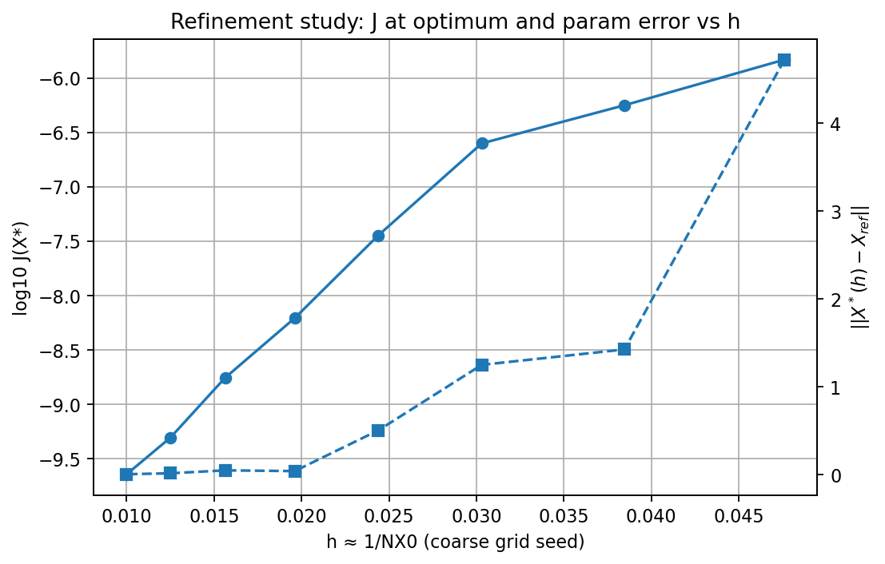
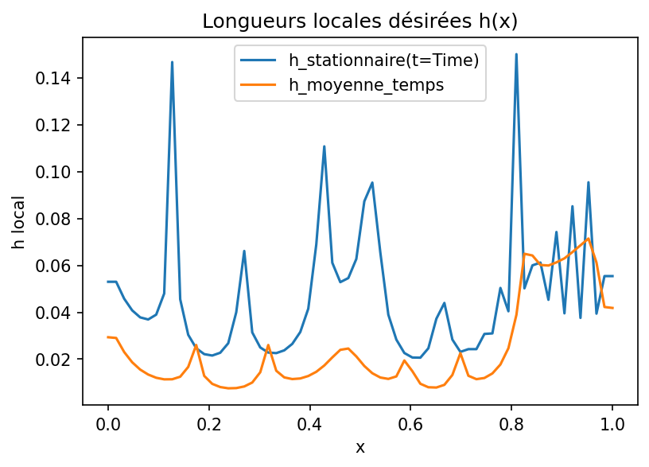
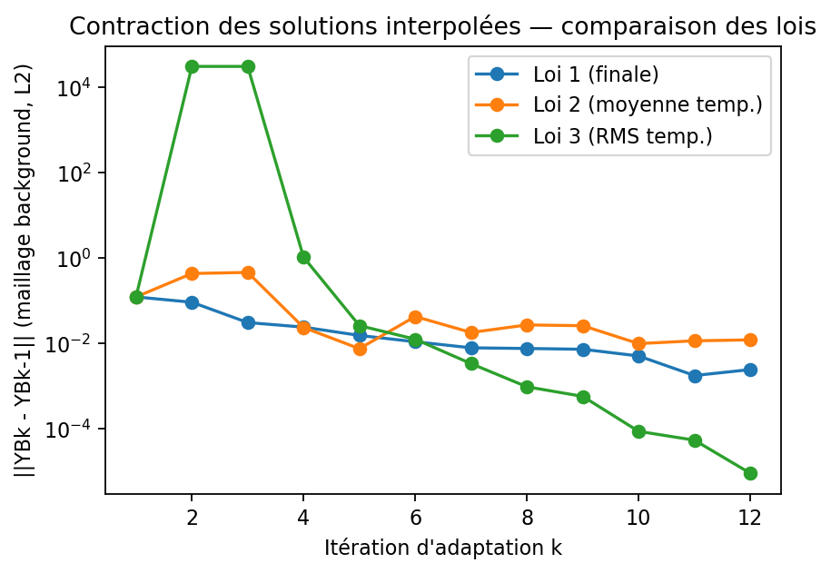
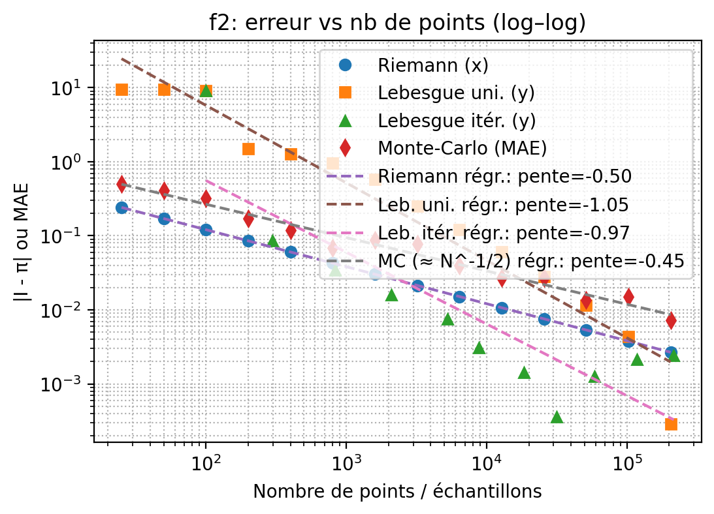
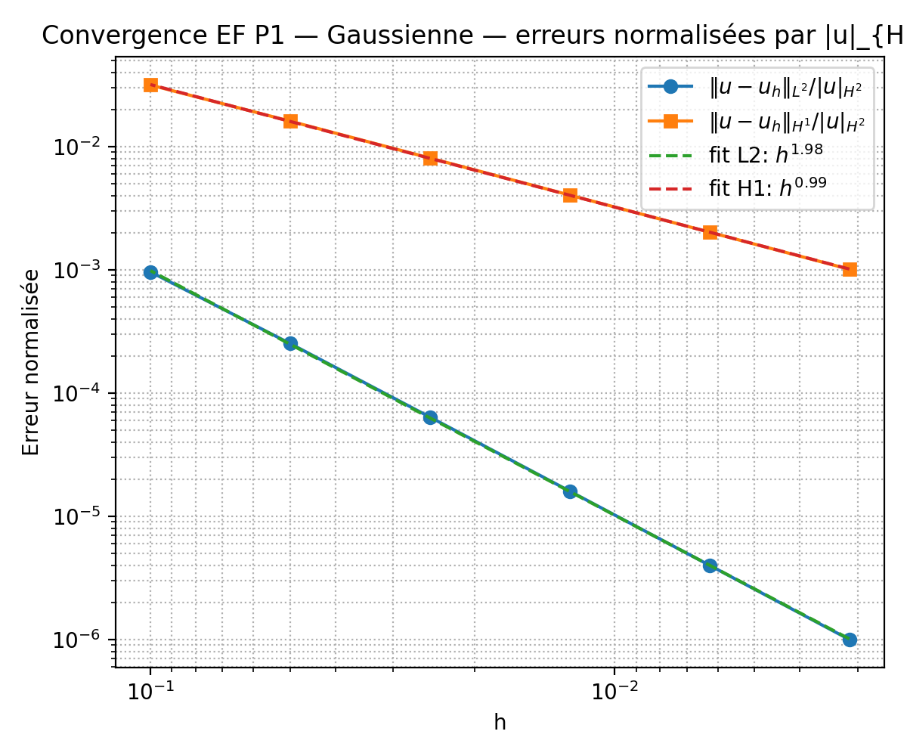
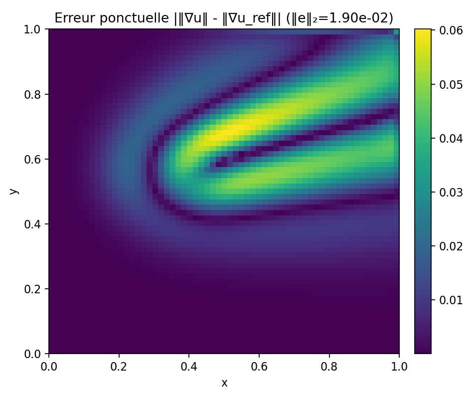
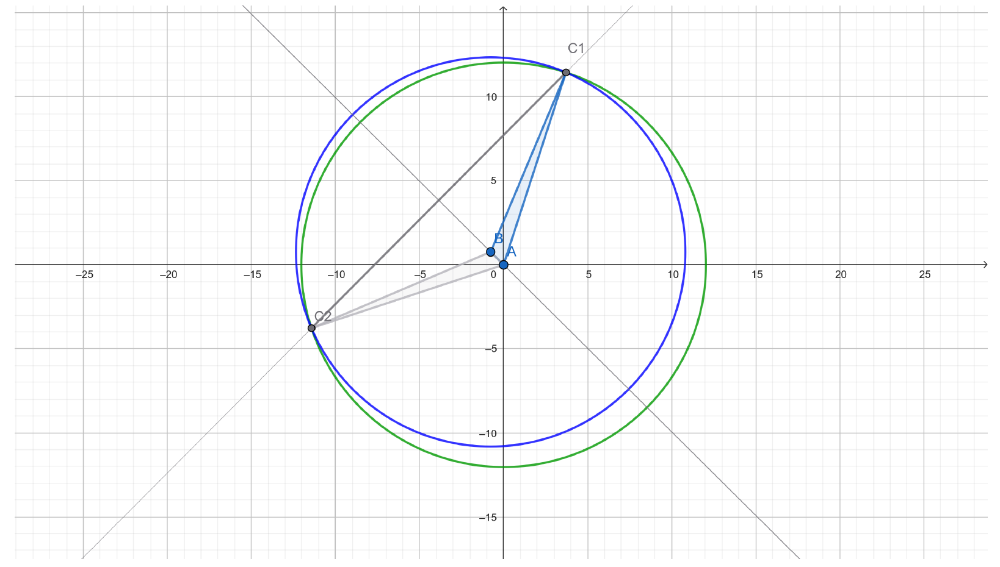

Victor Baleux, Mathématicien
Du théorème au code, sans perte de rigueur.
À propos
Actuellement en M2 MANU, disponible pour un stage à partir de Mars 2026.
Projets sélectionnés

Estimations a posteriori (Séance 6)
Optimisation d’un problème ADRS 1D stationnaire en exploitant la linéarité de l’état vis-à-vis des contrôles ; écriture quadratique de J(x) = ½ xᵀ A x − bᵀ x + c et condition du premier ordre pour le contrôle optimal.
Calcul précis de Aij = ⟨ui, uj⟩ et bi = ⟨ui, udes − u0⟩ lorsque les champs vivent sur des maillages adaptés différents : interpolation croisée sur une grille commune et quadrature trapézoïdale adaptative avec tolérances serrées.
Chaîne numérique : pseudo-temps explicite, h-adaptation guidée par un indicateur de courbure |uxx|, construction des bases {ui}, assemblage de (A, b), résolution A x = b ; validation par comparaison avec une référence sur maillage fixe fin.
Résultats et visus : surface J(x1, x2), étude de raffinement h ↦ J(X*) et ∥X* − Xopttrue∥, cas cible uniforme udes ≡ 1 ; écarts faibles entre l’approche « adaptation + intégration croisée » et la référence.


Estimations a posteriori (Séance 5)
Implémentation et validation d’un solveur ADR 1D instationnaire avec solution fabriquée (MMS).
Comparaison d’intégrateurs de Runge–Kutta (ordre 1→4) au point milieu : stabilité (CFL) et sensibilité au pas de temps.
Conception d’un estimateur d’erreur résiduel pour l’adaptation de maillage (h‑adaptation),
visualisation de la distribution optimale h(x) et comparaison maillage uniforme vs maillage adapté.
Évaluation par erreurs L2/H1, ordre observé de convergence et indice d’efficacité de l’estimateur.

Estimations a posteriori (Séance 4)
Ce TP explore l’adaptation de maillage en 1D pour une équation de
convection–diffusion, à partir d’une estimation a posteriori.
Calcul d’un indicateur basé sur la dérivée seconde
Txx ≈ u''(x), construction d’une métrique locale
λ(x) et reconstruction du maillage avec h(x) ≈ 1/√λ(x).
Comparaison de trois lois de métrique : finale instantanée, moyenne temporelle et RMS.
Étude de la relation NX(ε) pour relier coût maillage et erreur.
Critères d’arrêt : stabilité de NX et cible en norme L²;
vérification par contraction sur un maillage de fond.

Estimations a posteriori (Séance 3)
Comparaison de plusieurs méthodes d’intégration numérique (Riemann, Lebesgue, Monte-Carlo) sur deux fonctions tests, l’une régulière et l’autre singulière. Les résultats mettent en évidence la rapidité de Riemann sur les fonctions lisses, la robustesse des approches de Lebesgue face aux singularités et la généralité de Monte-Carlo malgré sa lenteur.

Estimations a posteriori (Séance 2)
Implémentation en Python d’un schéma explicite pour une équation ADRS 1D avec solution exacte fabriquée. Extension en 2D avec éléments finis P1 pour estimer les erreurs et vérifier les ordres de convergence. Les codes confirment les résultats théoriques (O(h) en H1 et O(h²) en L2).

Estimations a posteriori (Séance 1)
Mise en place en Python d’outils d’estimation a posteriori pour un problème 1D de convection–diffusion : scripts/notebooks pour calculer l’erreur numérique, tracer des courbes de convergence et explorer des stratégies de raffinement de maillage.

Calculs de positionnements à partir d’anciennes données topographiques à Gabian (Hérault)
Des fouilles ulterieures ont été faites aux coordonnées calculées et ont confirmées le site de fouille
 Théoreme de Kuratowski et conjecture de Heawood
Théoreme de Kuratowski et conjecture de Heawood
Mémoire de M1 Mathématiques fondamentales réalisée en binôme. Le Théorème de kuratowski à été traité rapidemment on a alors ajouté la conjecture de Heawood, elle est cependant incomplète
Site web portfolio minimal
Ce site ! One‑page avec thème clair/sombre.
Compétences
- Mathématiques
-
- EDP & calcul scientifique : Analyse des EDP (1→3), analyse numérique des EDP, modélisation numérique, estimations a posteriori, problèmes inverses
- Optimisation : optimisation convexe
- Analyse :analyse complexe, analyse fonctionnelle, mesure–intégration–Fourier, calcul différentiel & EDO
- Algèbre & géométrie : algèbre (1–2), groupes & anneaux, groupes & algèbres de Lie, géométrie différentielle, topologie (dont topologie algébrique), théorie des corps, cryptographie
- Graphes : notions avancées (Kuratowski, conjecture de Heawood)
- Mécanique appliquée : milieux continus, mécanique des fluides
- Informatique & outils
-
- Langages : C/C++ (dont C++ avancé), Python
- Écosystème scientifique : SageMath, MATLAB, FreeFem++, LaTeX
- Dev & outillage : Git/GitHub, HTML/CSS
- Numérique pour les EDP : méthodes numériques, modélisation & simulation
- Autre
-
- Langues : Français ; Anglais (C2) ; Espagnol (notions)
- Communication & pédagogie : préparation écrit/oral (Agrégation), rédaction scientifique (TER, mémoire)
- Soft skills : rigueur, autonomie, travail en équipe, sens des responsabilités, capacité d’abstraction, sociabilité
Formation
Modélisation et Analyse Numérique — M2 MANU
Université de Montpellier · 2025–présent
- Analyse Numérique 4 · Analyse des EDP 3 · Estimations a posteriori · Problèmes inverses · Programmation 2 (C++ avancé) · Modélisation numérique
- Stage
Réorientation vers les mathématiques appliquées
Université de Montpellier · 2024–2025
- Semestre 2, M1 MANU : Analyse des EDP 1–2 · Analyse Numérique 1–3 · Mécanique des millieux continues · Mécanique des fluides · Programmation 1 (C++) · Géométrie différentielle
- Semestre 1, M2 Mathématiques fondamentales : Géométrie différentielle · Topologie algébrique · Géométrie algébrique
Préparation à l’agrégation — M2
Université de Montpellier · 2023–2024
- UEs : Préparation écrit/oral
- Option C Algèbre & calcul formel (SageMath) · Projet (développements)
- Admissible à L' Agrégation de Mathématiques
Mathématiques fondamentales — M1
Université de Montpellier · 2022–2023
- Groupes & géométrie · Algèbre 1–2 · Analyse fonctionnelle · Analyse complexe & Topologie · Géométrie différentielle · Groupes & algèbres de Lie
- TER (mémoire) : Théoreme de Kuratowski et conjecture de Heawood
Licence de mathématiques
Université de Montpellier · 2019–2022
- L3 : Groupes & anneaux 1 · Calcul différentiel & EDO · Mesure–Intégration–Fourier · Topologie · Analyse complexe · Analyse numérique des EDP
- options : Groupes & anneaux 2 · Optimisation convexe
- CUPGE maths/physique (L1–L2) : Eletromagnétisme · Mécanique du solide indéformable
Baccalauréat scientifique — Lycée Frédéric Bazille
Montpellier · 2018
- Spécialité mathématiques, mention AB
Contact
N'hésitez pas à m'écrire pour un stage, un poste ou un projet.